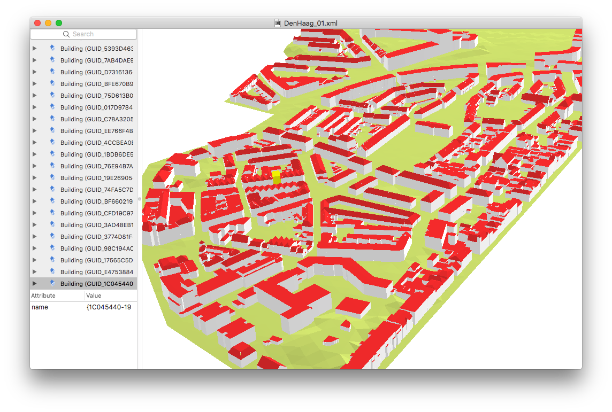
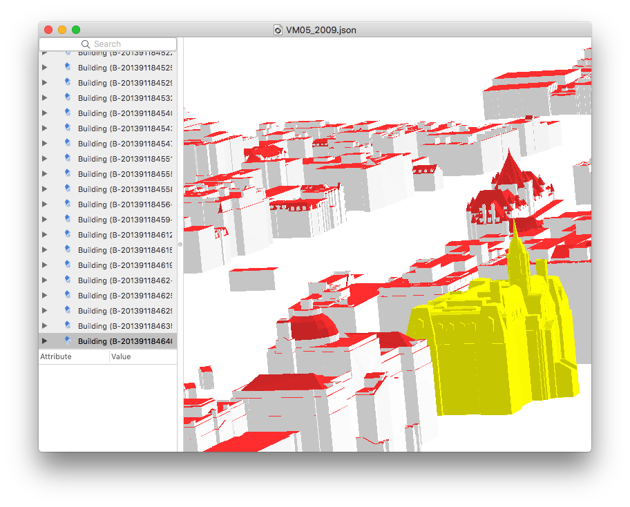
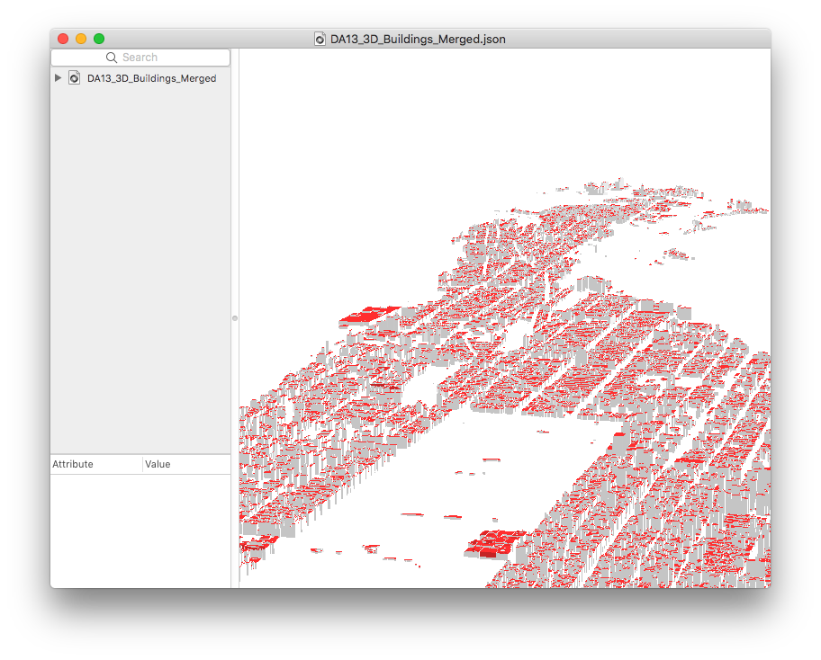
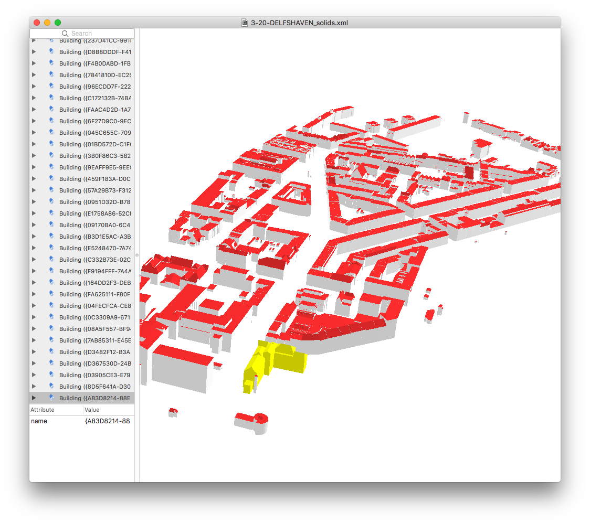
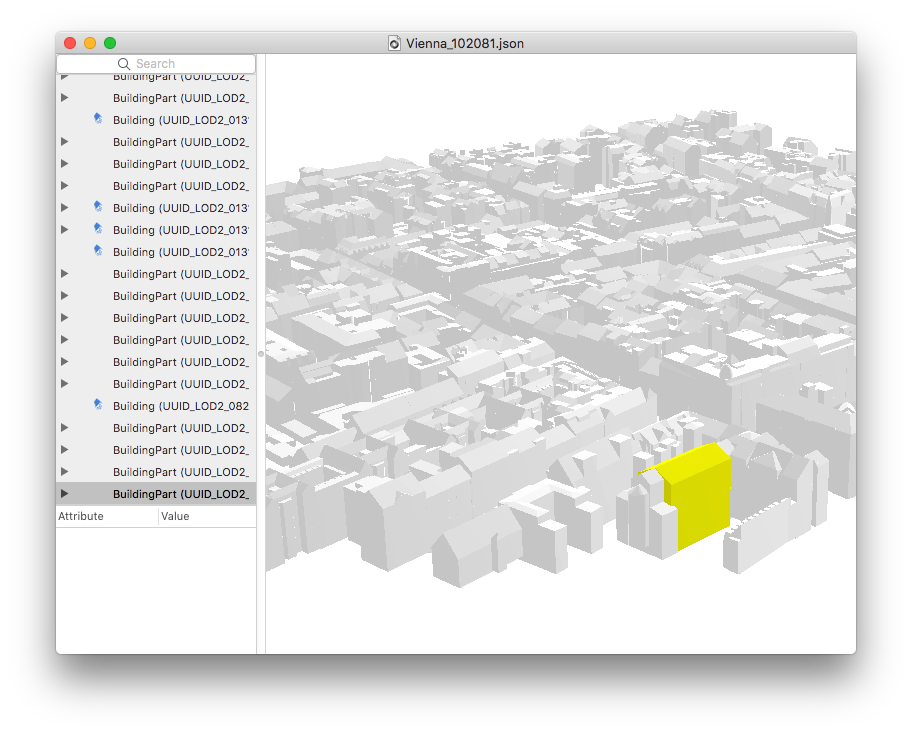

Example datasets¶
Dummy file showcasing the different possibilities¶
Dummy means that the values of the coordinates have no value, this is just to see how a file could look like with different possibilities of CityJSON.
Several cities around the world¶
Note
The files below were automatically converted from CityGML with the open-source library citygml4j.
| Original CityGML URL | screenshot | download files | textures | details |
|---|---|---|---|---|
| Den Haag |  | [JSON] [GML] | none | ‘Tile 01’, Buildings (in LoD2) and Terrain are merged |
| Montréal |  | [JSON] [GML] | none | tile ‘VM05’. Buildings in LoD2 |
| New York |  | [JSON] [GML] | none | tile ‘DA13’. Buildings in LoD2 |
| Rotterdam |  | [JSON] [GML] | [ZIP] | neighbourhood ‘Delfshaven’. Buildings in LoD2 |
| Vienna |  | [JSON] [GML] | none | Buildings in LoD2 |
| “GeoRes” | [JSON] [GML] | [ZIP] | CityGML demo. Buildings, Terrain, Vegetation, Water, LandUse. | |
| “Railway” | [JSON] [GML] | [ZIP] | CityGML demo. Buildings, Railway, Terrain, Vegetation (with Implicit Geometries), Water, Tunnels |
{kind=link}
{kind=link}
{kind=link}
{kind=link}
{kind=link}
{kind=link}
{kind=link}
CityJSON compression factors¶
| CityGML dataset | CityGML size | CityGML size (w/o spaces) | CityJSON | compression factor |
|---|---|---|---|---|
| Den Haag | 23MB | 18MB | 2.9MB | 6.2 |
| Montréal | 56MB | 42MB | 5.4MB | 7.8 |
| New York | 590MB | 574MB | 105MB | 5.5 |
| Rotterdam | 16MB | 15MB | 2.6MB | 5.8 |
| Vienna | 37MB | 36MB | 5.3MB | 6.8 |
| “GeoRes” | 4.3MB | 4.1MB | 524KB | 8.0 |
| “Railway” | 45MB | 34MB | 4.3MB | 8.1 |
Note
- Observe that the file size doesn’t take into account the size of the textures files (PNG, JPG, etc) since CityJSON refers to the same ones.
- ‘w/o spaces’ means that CityGML files have all the carriage returns, tabs and spaces removed with this script, for a fair estimation of the compression factor